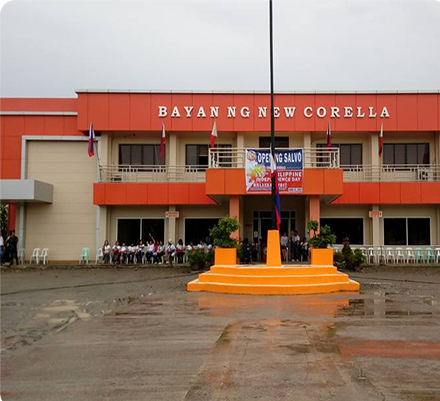
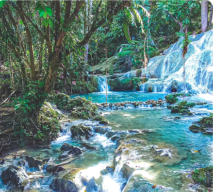
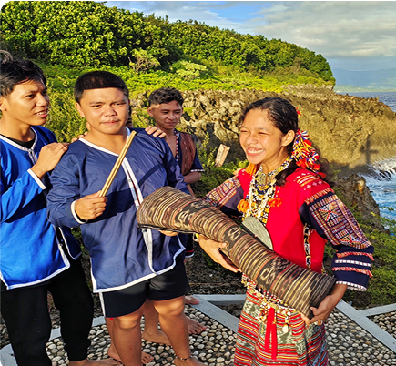
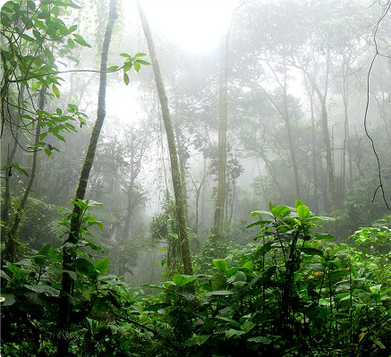

MUNICIPALITY OF NEW CORELLA
New Corella, a picturesque municipality in Davao del Norte, is renowned for its abundance of waterfalls, lush forests, and rich agricultural lands. Often called the “Waterfall Capital of Davao del Norte”, this hidden gem offers a blend of adventure, relaxation, and agribusiness opportunities. With its fertile lands producing rice, banana, and coconut, and its expanding tourism sector, New Corella is a rising eco-tourism and agricultural hub in Mindanao.

Geography & Area
A Land of Valleys, Hills, and Cascading Waters
New Corella covers 276 square kilometers, featuring rolling hills, fertile valleys, and numerous waterfalls. The Saug River, which flows through the town, provides freshwater sources for irrigation, hydroelectric power, and eco-tourism attractions. The municipality’s strategic location near Tagum City makes it a prime destination for nature enthusiasts and agricultural investors.

Brief History
From a Small Settlement to an Emerging Eco-Tourism Hub
Originally a farming community, New Corella developed as settlers from Luzon and the Visayas arrived in search of fertile lands and livelihood opportunities. Over time, its agriculture and natural wonders became the driving forces of its economy. Today, New Corella is positioning itself as a sustainable eco-tourism destination, showcasing its pristine waterfalls, forest reserves, and agribusiness potential.

Demographics & Language
A Diverse Community Rooted in Agriculture and Tourism
New Corella’s population is predominantly Cebuano (Bisaya)-speaking, with a mix of Tagalog and indigenous dialects. English is widely spoken in schools, businesses, and tourism areas, making the town welcoming to both local and international visitors.

Climate & Environment
A Natural Haven with Thriving Biodiversity
New Corella enjoys a tropical rainforest climate, with frequent rainfall ensuring lush greenery and sustainable farming. The municipality actively promotes reforestation, sustainable farming, and eco-friendly tourism practices to maintain its natural beauty and water resources.
Reference: davaodelnorte-new-corella